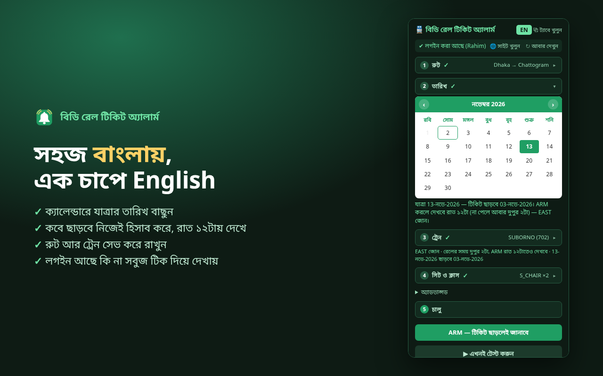
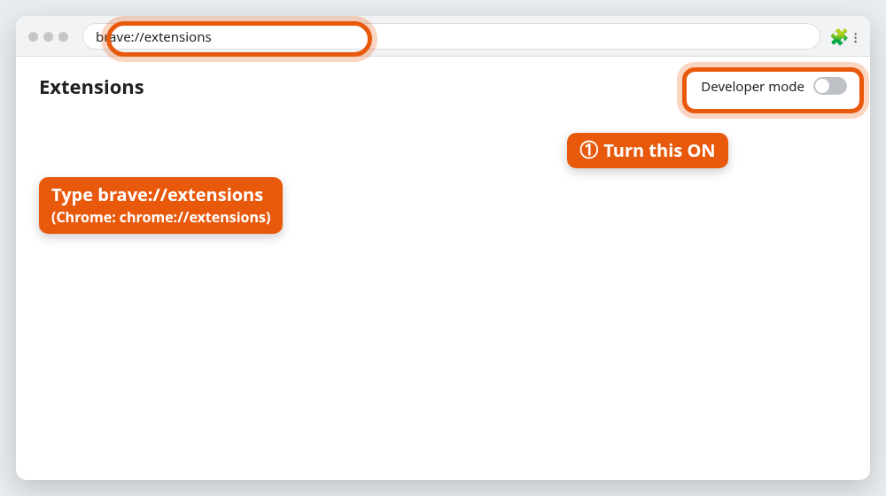
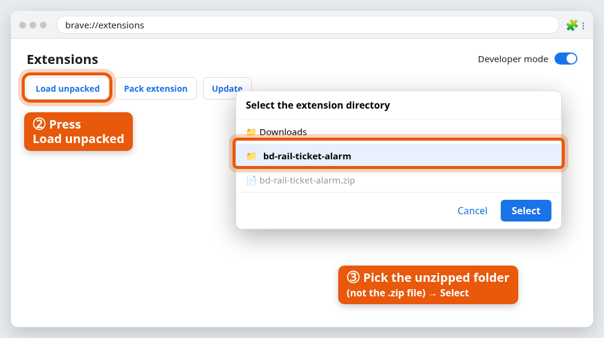
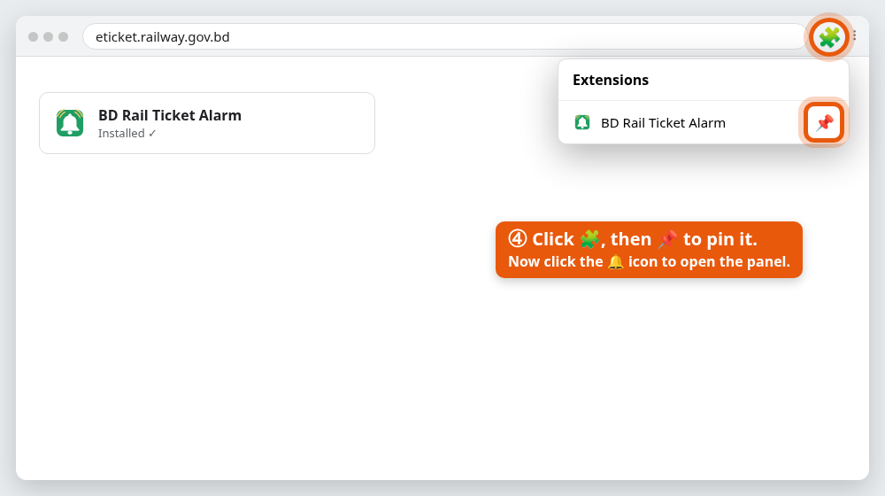

বিডি রেল টিকিট অ্যালার্ম
বিডি রেল টিকিট অ্যালার্মকেন ব্যবহার করবেন?
বাংলাদেশ রেলওয়ের ট্রেনের টিকিট যাত্রার ১০ দিন আগে ছাড়ে, আর জনপ্রিয় ট্রেনের টিকিট অনেক সময় কয়েক মিনিটেই শেষ হয়ে যায়। টিকিট ছাড়ার অপেক্ষায় বসে বসে eticket.railway.gov.bd রিফ্রেশ করার সময় কার আছে? বিডি রেল টিকিট অ্যালার্ম আপনার হয়ে নজর রাখে। আপনার ট্রেনের টিকিট খোলামাত্র অ্যালার্ম বাজায়, আর সরাসরি BOOK NOW ও সেরা সিটে নিয়ে যায়, যাতে আপনি থাকেন সবার আগে।
⏰ টিকিট ছাড়ার সময় আর মিস হবে না
কবে খুলবে নিজেই হিসাব করে।
🔕 বারবার রিফ্রেশ নয়
ঠিক সময়ে একটাই অ্যালার্ম।
🪑 সিট খুঁজতে হবে না
ভালো সিট নীল দাগে দেখানো থাকে, সাথে সোজা না উল্টো তার অনুমান।
ফ্রি · English ও বাংলা · সিট বাছাই, টিকিট কাটা ও পেমেন্ট আপনি নিজেই করবেন।
যা যা করে
📅 যাত্রার তারিখ বাছাই
ক্যালেন্ডারে তারিখে চাপ দিন। কোন দিন টিকিট ছাড়বে (১০ দিন আগে) তা নিজেই বের করে, সকাল ৮টায় দেখে — তখনই টিকিট ছাড়ে। পূর্বাঞ্চলের ট্রেনে ঈদের সময়ের মতো দুপুর ২টায় আবার দেখে।
⏱️ কাউন্টডাউন
বড় কাউন্টডাউন কার্ড, আর ১ দিন আগে ও ১ ঘণ্টা আগে নোটিফিকেশন।
🔔 সিট খুললেই অ্যালার্ম
ছাড়ার সেকেন্ডে আপনার ট্রেন খোঁজে। আপনার ক্লাসে অনলাইন সিট এলেই জোরে অ্যালার্ম বাজে।
✨ BOOK NOW জ্বলে ওঠে
পেজ আপনার ট্রেনে চলে যায়, আর BOOK NOW বোতাম হলুদ হয়ে জ্বলে।
🪑 ভালো সিট দাগানো
সিট-ম্যাপে বগির মাঝের ফাঁকের পাশের সারির সিট জ্বলজ্বলে নীল দাগে দেখিয়ে দেয়; ২+ টিকিটে একই সারিতে পাশাপাশি (হাঁটার পথের দুই পাশে ভাগ করে নয়)।
🧭 সিট সোজা না উল্টো? নতুন
প্রতিটি পরামর্শ দেওয়া সিটের পাশে তীর থাকে: ⬆ সোজা বা ⬇ উল্টো। কক্সবাজারের যাত্রায় দেখায় ⬆→⬇, কারণ ট্রেন চট্টগ্রামে দিক বদলায়। এটি প্রচলিত নিয়মে অনুমান, অফিসিয়াল নয়। কীভাবে অনুমান করে
🎫 ক্লাসের কোড বুঝিয়ে দেয় নতুন
S_CHAIR, SNIGDHA বা AC_B-এর মতো কোডের পাশে টিকিট সাইটে আর প্যানেলে সহজ ভাষায় মানে থাকে: এসি কিনা, শোয়ার বার্থ না বসার সিট। ১০টি কোডই দেখুন
🛡️ সার্ভারের সাথে ভদ্র
সেকেন্ডে প্রায় একবার, শুধু ছাড়ার পরে, সিট পেলেই বন্ধ, "ধীরে" বললে ধীরে। বট-চেকে কখনো হাত দেয় না।



যা লাগবে
- কম্পিউটারে Brave বা Google Chrome (বা Edge-এর মতো অন্য Chromium ব্রাউজার)। মোবাইলে চলে না।
- eticket.railway.gov.bd-এ একটি অ্যাকাউন্ট, ওই ব্রাউজারে লগইন করা।
- টিকিট ছাড়ার সময়ে ব্রাউজার খোলা আর কম্পিউটার চালু (স্লিপে নয়)।
ইনস্টল (প্রায় ২ মিনিট)
⬇ bd-rail-ticket-alarm.zip ডাউনলোড করুন
- আনজিপ করুন। ডাউনলোড করা ফাইলে রাইট-ক্লিক → Extract All (Windows), বা ডাবল-ক্লিক (Mac, Linux)।
bd-rail-ticket-alarmনামে একটি ফোল্ডার পাবেন। ফোল্ডারটি স্থায়ী জায়গায় রাখুন, যেমনDocuments— এমন ফোল্ডারে নয় যা আপনি মাঝে মাঝে খালি করেন। - এক্সটেনশন পেজ খুলে Developer mode চালু করুন। অ্যাড্রেস বারে
brave://extensionsলিখে Enter চাপুন (Chrome:chrome://extensions, Edge:edge://extensions)। ডানদিকে উপরে Developer mode চালু করুন।
- ফোল্ডারটি লোড করুন। Load unpacked চেপে
bd-rail-ticket-alarmফোল্ডারটি বাছুন — ফোল্ডার, .zip ফাইল নয়।
- পিন করুন। অ্যাড্রেস বারের পাশের 🧩 পাজল আইকনে ক্লিক করে BD Rail Ticket Alarm-এর পাশের 📌 চাপুন। প্যানেল খুলতে 🔔 আইকনে ক্লিক করুন।

Developer mode কি নিরাপদ?
হ্যাঁ। এটা শুধু স্টোরের বদলে আপনার কম্পিউটারের একটি ফোল্ডার থেকে এক্সটেনশন যোগ করতে দেয়, অন্য কোনো সেটিং বদলায় না। Chrome চালু করার সময় "developer mode extensions" নিয়ে একটা নোটিশ দেখাতে পারে — ✕ দিয়ে বন্ধ করুন, Disable চাপবেন না। যে কোড ইনস্টল করছেন, সেটাই GitHub-এ পড়ে দেখা যায়।
ফোল্ডারটি জায়গামতো রাখুন
ব্রাউজার ওই ফোল্ডার থেকেই এক্সটেনশন চালায়। সরালে, নাম বদলালে বা মুছলে এক্সটেনশন আর তার সেটিংস হারিয়ে যাবে।
নতুন ভার্সনে আপডেট
- একই বোতাম থেকে zip আবার ডাউনলোড করে আনজিপ করুন।
- নতুন
bd-rail-ticket-alarmফোল্ডারের ভেতরের সব ফাইল পুরনো ফোল্ডারের ওপরে কপি করুন (একই জায়গায়, সব রিপ্লেস)। brave://extensions-এ এক্সটেনশনের কার্ডে ↻ চাপুন। সেটিংস আর সেভ করা ট্রিপ থেকে যাবে।
আপডেটের পর ARM এখনো লাল আছে কি না দেখে নিন — রিলোডে চালু থাকা অ্যালার্ম মুছে যেতে পারে।
কীভাবে ব্যবহার করবেন
প্যানেলে নম্বর দেওয়া ধাপ আছে। শেষ হওয়া ধাপ ✓ দিয়ে এক লাইনে ছোট হয়ে যায় — চাপলে আবার খোলে। উপরের EN / বাং বোতামে ভাষা বদলায়।
- লগইন। প্যানেলের উপরে 🌐 সাইট খুলুন চাপুন — eticket.railway.gov.bd নিজেই খুলে যাবে (আগে থেকে খোলা থাকলে সেই ট্যাবে যাবে)। সেখানে লগইন করুন, আর সাইটের Disclaimer ব্যানারে একবার I AGREE চাপুন — যাতে টিকিট ছাড়ার সময় পেজ ঢেকে না রাখে। প্যানেলে সবুজ ✓ দেখাবে। (লগইন সবসময় আপনি নিজে করবেন — এক্সটেনশন কখনো পাসওয়ার্ড চায় না।)
- রুট। কোথা থেকে / কোথায় লিখে সাজেশন থেকে বাছুন।
- তারিখ। যাত্রার তারিখে চাপ দিন। নিচের লাইনে লেখা থাকবে কবে টিকিট ছাড়বে।
- ট্রেন। দুই স্টেশন বাছলেই রুটের ট্রেনের তালিকা নিজে থেকে চলে আসবে (নতুন করে আনতে ⟳ চাপুন)। আপনারটি বাছুন — তালিকায় ছাড়া → পৌঁছানোর সময় আর কোন দিন ট্রেন বন্ধ (যেমন "বুধবার বন্ধ") দেখা যাবে। কখন দেখবে তা নিজেই ঠিক হবে: ছাড়ার দিন সকাল ৮টা, আর পূর্বাঞ্চলের ট্রেনে ব্যাকআপ হিসেবে দুপুর ২টা।
- সিট ও ক্লাস। ক্লাস (যেমন
S_CHAIR), কয়টা সিট (১–৪), আর চাইলে পছন্দের বগি (THA,TA) বা নির্দিষ্ট সিট (THA-21,THA-22)। কোন কোড কী বুঝছেন না? প্যানেলেই লেখা থাকে, বা দেখুন ক্লাসের কোড। - ARM। ARM চাপুন। বোতাম লাল হবে আর সবুজ কার্ডে কাউন্টডাউন চলবে। এবার প্যানেল বন্ধ করতে পারেন।
টিকিট ছাড়ার সময়ে যা হবে
| কখন | কী হয় |
|---|---|
| ১ দিন আগে | নোটিফিকেশন: "কাল টিকিট ছাড়বে"। |
| ১ ঘণ্টা আগে | নোটিফিকেশন। লগইন আছে কি না দেখে নিন। |
| ~৭৫ সেকেন্ড আগে | একটি eticket.railway.gov.bd ট্যাব খোলে, নিচে-ডানে ছোট স্ট্যাটাস বক্সসহ। |
| ছাড়ার দিন সকাল ৮টা | আপনার ট্রেন খোঁজা শুরু, প্রায় সেকেন্ডে একবার, বড়জোর ৫ মিনিট। |
| দুপুর ২টা (শুধু পূর্বাঞ্চল) | শুধু সকাল ৮টায় কিছু না পেলে: আবার একই খোঁজ। সকাল ৮টায় সিট পেলে এটা বাতিল হয়ে যায়। |
| সিট পাওয়া গেলে | 🔔 অ্যালার্ম + নোটিফিকেশন। পেজ রিলোড হয়ে আপনার ট্রেনে যায়, আপনার ক্লাসের BOOK NOW জ্বলে। |
| আপনি BOOK NOW চাপলে | সিট-ম্যাপ খোলে, সেরা সিটগুলো নীল দাগে থাকে। চওড়া স্ক্রিনে স্ট্যাটাস বক্স সিট-ম্যাপের পাশে চলে আসে, সিটগুলো নীল বোতাম হিসেবে দেখায় (চাপলে সেই সিটে নিয়ে যায়), আর অন্য বগি বেশি খালি হলে জানায়। বগি ভর্তি হলে কোন কোন বগিতে খালি সিট দেখাচ্ছে তার তালিকা দেয়। |
| শেষে | দাগানো সিট চাপুন → CONTINUE PURCHASE → OTP → পেমেন্ট। |
অ্যালার্ম থামাতে পেজে যেকোনো জায়গায় ক্লিক করুন। সব থামাতে ■ থামান চাপুন (প্যানেলে বা পেজে)।
প্রতিবার বড়জোর ৫ মিনিট খোঁজে (অ্যাডভান্সড-এ বদলানো যায়)। পূর্বাঞ্চলের ট্রেনে সকাল ৮টায় কিছু না পেলে নোটিফিকেশনে জানাবে দুপুর ২টায় আবার দেখবে — কম্পিউটার চালু রাখুন।
কোন সিট দাগানো হয়
- আপনার লেখা নির্দিষ্ট সিট — খালি থাকলে।
- আপনার পছন্দের বগি, যে ক্রমে লিখেছেন।
- নইলে সম্ভবত সোজা ⬆ সিট আগে (দেখুন আমার সিট সোজা না উল্টো?)। স্ক্রিনের বগিতে কোনো সোজা সিট খালি না থাকলেই শুধু উল্টো সিট দেখায়, আর সাহায্য-বক্সে তা লিখে দেয়। কক্সবাজারের যাত্রায় "সোজা" মানে বড় অংশ ঢাকা–চট্টগ্রামে সোজা।
- তার মধ্যে বগির মাঝামাঝি অংশ — দরজা, টয়লেট আর চাকা থেকে দূরে। সিট নম্বর নয়, ম্যাপে সিট কোথায় আছে সেটা দেখে বাছে, তাই ম্যাপের মাঝের ফাঁকের পাশের সারি আগে।
- ২ বা তার বেশি টিকিটে একই সারিতে পাশাপাশি সিট (মাঝের হাঁটার পথের দুই পাশে ভাগ করে নয়), মাঝামাঝির যত কাছে সম্ভব।
এটা শুধু দাগায়। চাপবেন আপনি — চাইলে অন্য সিটও নিতে পারেন।
🧭 আমার সিট সোজা না উল্টো? নতুন
অনেকেই ট্রেন যেদিকে যায় সেদিকে মুখ করে, মানে সোজা সিটে বসতে চান। টিকিট সাইট বলে না কোন সিট সোজা, তাই এক্সটেনশন একটি অনুমান করে, সোজা সিট আগে পরামর্শ দেয়, আর প্রতিটি পরামর্শ দেওয়া সিটের পাশে অনুমানটি দেখায়।
যে নিয়মে অনুমান করে
বাংলা ভ্রমণ-সাইটগুলো একটি সহজ নিয়মে একমত: বগির প্রায় অর্ধেক সিট এক দিকে, বাকি অর্ধেক উল্টো দিকে মুখ করা। কোন অর্ধেক সোজা, তা নির্ভর করে ট্রেন ঢাকায় যাচ্ছে না ঢাকা থেকে ছাড়ছে তার ওপর।
| আপনার ট্রেন… | সাধারণত সোজা ⬆ | সাধারণত উল্টো ⬇ |
|---|---|---|
| ঢাকা থেকে ছাড়ছে (যেমন ঢাকা → চট্টগ্রাম, রাজশাহী, খুলনা) | ৩১–৬০ নম্বর সিট | ১–৩০ নম্বর সিট |
| ঢাকায় যাচ্ছে (যেমন চট্টগ্রাম, রাজশাহী, খুলনা → ঢাকা) | ১–৩০ নম্বর সিট | ৩১–৬০ নম্বর সিট |
এক্সটেনশন শুধু ৩০ নম্বরে ভাগ করে না। সিট-ম্যাপের মাঝে যেখানে ফাঁকা জায়গা, দুই অর্ধেক সেখানে মেলে, তাই সেখান থেকে ভাগ করে। এতে ৬০ সিটের নয় এমন বগিতেও কাজ করে।
কক্সবাজারের যাত্রা: চট্টগ্রামে সিট উল্টে যায়
ঢাকা–কক্সবাজার ট্রেন চট্টগ্রামে ২০–৩০ মিনিট থামে আর সেখানে দিক বদলায়। ঢাকা থেকে চট্টগ্রাম পর্যন্ত যে সিট সোজা, চট্টগ্রাম থেকে কক্সবাজার পর্যন্ত সেটি উল্টো; ফেরার পথে ঠিক উল্টোটা। যাত্রার বড় অংশ ঢাকা–চট্টগ্রাম।
তীরগুলোর মানে
| সিটের চিপে | মানে |
|---|---|
| DA-36 ⬆ | সম্ভবত পুরো পথ সোজা |
| DA-25 ⬇ | সম্ভবত পুরো পথ উল্টো |
| DA-36 ⬆→⬇ | সম্ভবত চট্টগ্রাম পর্যন্ত সোজা, তারপর উল্টো |
| DA-25 ⬇→⬆ | সম্ভবত চট্টগ্রাম পর্যন্ত উল্টো, তারপর সোজা |
| DA-36 (তীর নেই) | যাত্রা ঢাকা থেকে শুরু বা ঢাকায় শেষ নয়, তাই নিয়মটি খাটে না। অনুমান দেখানো হয় না। |
সাহায্য-বক্সেও কথায় লেখা থাকে, বাংলা বা ইংরেজিতে।
🎫 ক্লাসের কোডগুলোর মানে কী? নতুন
টিকিট সাইটে S_CHAIR বা AC_B-এর মতো ছোট কোড দেখায়। কোনটা কী, নিচে দেওয়া হলো।
এক্সটেনশন এখন তিন জায়গায় এগুলো বুঝিয়ে দেয়:
- টিকিট সাইটে: ট্রেনের তালিকায় প্রতিটি ক্লাসের নামের নিচে সহজ কয়েকটি শব্দ, যেমন ❄️ 💺 এসি চেয়ার। মাউস রাখলে পুরো মানে দেখায়।
- প্যানেলে: ক্লাসের তালিকায় প্রতিটি কোডের মানে থাকে, আর ঘরের নিচের লাইনে আপনার বাছা ক্লাসগুলোর ব্যাখ্যা।
- সাহায্য-বক্সে: সিট খুললে বলে দেয়, যে ক্লাস কাটছেন সেটা আসলে কী।
সহজ নিয়ম: BERTH = শোয়ার বার্থ (🛏️), SEAT বা CHAIR = বসার সিট (💺)। AC আর SNIGDHA শীতাতপ নিয়ন্ত্রিত (❄️)। F_ মানে ফার্স্ট ক্লাস।
| কোড | এসি? | শোয়া না বসা | কোথায় | জেনে রাখুন |
|---|---|---|---|---|
AC_Bএসি বার্থ | ❄️ হ্যাঁ | 🛏️ বার্থ (শোয়া) | কেবিন | বিছানাপত্র দেয়। রাতের ট্রেনে সবচেয়ে আরামের। |
AC_Sএসি সিট | ❄️ হ্যাঁ | 💺 সিট | কেবিন | একই এসি বার্থের কেবিন, বসার সিট হিসেবে বিক্রি। বিছানাপত্র নেই। |
SNIGDHAস্নিগ্ধা | ❄️ হ্যাঁ | 💺 চেয়ার | খোলা কোচ | সাধারণ এসি চেয়ার ক্লাস। |
AC_CHAIRএসি চেয়ার | ❄️ হ্যাঁ | 💺 চেয়ার | খোলা কোচ | এসি চেয়ার কোচ, স্নিগ্ধার মতো। গাইডগুলোতে এই কোড খুব কম পাওয়া যায়। |
F_BERTHফার্স্ট বার্থ | না | 🛏️ বার্থ (শোয়া) | কেবিন | রাতের ট্রেনের নন-এসি শোয়ার কেবিন। বিছানাপত্র থাকতেও পারে, না-ও পারে। |
F_SEATফার্স্ট সিট | না | 💺 সিট | কেবিন | একই ফার্স্ট ক্লাস কেবিন, বসার সিট হিসেবে বিক্রি। |
F_CHAIRফার্স্ট চেয়ার | না | 💺 চেয়ার | খোলা কোচ | শোভন চেয়ারের চেয়ে ভালো চেয়ার, কেবিন নেই। |
S_CHAIRশোভন চেয়ার | না | 💺 চেয়ার | খোলা কোচ | আন্তঃনগর ট্রেনের সাধারণ নন-এসি ক্লাস। নম্বরওয়ালা সিট। |
SHOVANশোভন | না | 💺 সিট | খোলা কোচ | আরও সাধারণ আসন, শোভন চেয়ারের চেয়ে সস্তা। |
SHULOVশুলভ | না | 💺 বেঞ্চ | খোলা কোচ | সবচেয়ে সস্তা। সাধারণ বেঞ্চ, বেশিরভাগ লোকাল ও মেইল ট্রেনে। |
সব ট্রেনে সব ক্লাস থাকে না। কোডগুলো বাংলাদেশ রেলওয়ের নিজের। মানেগুলো ভ্রমণ-গাইড
(Seat61, bdrailwayinfo.org)
আর একটি বাংলা ব্যাখ্যা-ভিডিও থেকে, যেগুলো AC_CHAIR ছাড়া সবগুলোতে একমত। ভাড়া বদলায়, তাই দাম সাইটে দেখে নিন।
ব্লক থেকে বাঁচা
কোনো কম্পিউটার খুব ঘন ঘন সার্ভারের কাছে তথ্য চাইলে সার্ভার বলে "You are requesting too frequently" আর কিছুক্ষণ ব্লক করে রাখে। এক্সটেনশনটি স্বাভাবিক ব্যবহারের সীমার ভেতরে থাকার জন্য বানানো:
- ছাড়ার আগে কিছুই না। তারিখ এখনো না ছাড়লে খোঁজা শুরুই করে না।
- সেকেন্ডে প্রায় একবার খোঁজে, মাত্র কয়েক মিনিট, আর সিট পেলেই থেমে যায়।
- "ধীরে" বললে ধীরে চলে — ২, ৪, ৮, তারপর ১৫ সেকেন্ড অপেক্ষা।
- সিট-ম্যাপের বট-চেকে ("আপনি কি মানুষ?") কখনো হাত দেয় না। সিট-ম্যাপ আপনি নিজে খোলেন।
- কখনো আপনার হয়ে লগইন করে না, OTP বা পেমেন্টও না।
আপনার দিক থেকে: যে তারিখ এখনো ছাড়েনি সেটায় বারবার টেস্ট করবেন না, আর এক ট্রিপে একটিই কম্পিউটার। বিস্তারিত জানতে পড়ুন কীভাবে কাজ করে।
সমস্যা হলে
| সমস্যা | কী করবেন |
|---|---|
| "You are requesting too frequently" | ■ থামান চাপুন, ট্যাব বন্ধ করে ১৫–৩০ মিনিট অপেক্ষা করুন। |
| "ট্যাবের সাথে যোগাযোগ হচ্ছে না" বা নাম আসছে না | ↻ চাপুন — এক্সটেনশন এখন ইনস্টল বা আপডেটের আগে খোলা টিকিট ট্যাবের সাথেও নিজে যুক্ত হয়। তবুও না হলে সেই ট্যাবটি রিলোড করুন। |
| লাল ✖ লগইন নেই | eticket.railway.gov.bd-এ লগইন করে ↻ চাপুন। আগে train.shohoz.com ব্যবহার করে থাকলে: দুই সাইটের লগইন আলাদা, তাই eticket.railway.gov.bd-এ একবার লগইন করুন। |
| স্ট্যাটাস বক্সে "Session expired" | আবার লগইন করুন। খেয়াল করানোর জন্য অ্যালার্ম বাজবে। |
| তালিকায় ট্রেন আসছে না | একটি ট্যাবে eticket.railway.gov.bd খুলে লগইন করুন, তারপর ⟳ চাপুন। |
| আওয়াজ নেই | টুলস → 🔔 চেপে দেখুন। কম্পিউটারের ভলিউম আর ব্রাউজার মিউট কি না দেখুন। |
| নোটিফিকেশন আসে না | কম্পিউটারের সেটিংসে ব্রাউজারের নোটিফিকেশন চালু করুন, Do Not Disturb বন্ধ করুন। |
| ARM করার পর ট্রেন বা তারিখ বদলেছেন | ARM চেপে বাতিল করুন, তারপর আবার ARM করুন। |
| BOOK NOW জ্বলেনি | সাইটের ডিজাইন বদলে থাকতে পারে। নিজে স্ক্রল করে ট্রেনে যান, আর জানান। |
প্রশ্নোত্তর
এটি কি নিজে টিকিট কেটে দেয়?
না। সিট খোলার মুহূর্তটা ধরে, আপনাকে জানায় আর কোন বোতাম চাপতে হবে দেখিয়ে দেয়। সিট বাছাই, OTP আর পেমেন্ট সবসময় আপনার।
সিট নিজে বেছে নেয় না কেন?
সাইটটি সিট-ম্যাপ একটি বট-চেক দিয়ে সুরক্ষিত রাখে। সেটা এড়াতে গেলে সাইটের নিয়ম ভাঙা হয় আর আপনার অ্যাকাউন্ট ঝুঁকিতে পড়ে। তাই ধাপটা ইচ্ছে করেই আপনার হাতে রাখা।
এটি কি আমার পাসওয়ার্ড জানে?
না। লগইন আপনি সাইটে নিজে করেন। সাইট ব্রাউজারে যে লগইন সেশন রাখে, এক্সটেনশন শুধু সেটা দিয়েই টিকিট সাইটের সাথে কথা বলে। দেখুন প্রাইভেসি।
টিকিট পাওয়া কি নিশ্চিত?
না। জনপ্রিয় ট্রেনের টিকিট কয়েক সেকেন্ডে শেষ হয়, হাজারো মানুষ একসাথে চেষ্টা করে। এটি শুধু খেয়াল করা আর ট্রেন খোঁজার সেকেন্ডগুলো বাঁচায় — বাকিটা আপনার গতি আর ভাগ্য।
S_CHAIR, SNIGDHA, AC_B এসব কোডের মানে কী?
BERTH মানে শোয়ার বার্থ, SEAT বা CHAIR মানে বসার সিট, আর AC বা SNIGDHA মানে এসি। এক্সটেনশন টিকিট সাইটে প্রতিটি ক্লাসের নিচে আর প্যানেলে মানে লিখে দেয়। দেখুন পুরো তালিকা।
কোন সিট সোজা আর কোনটা উল্টো, বলতে পারে?
অনুমান করে, সোজা সিট আগে পরামর্শ দেয়, আর প্রতিটি পরামর্শ দেওয়া সিটের পাশে তীর দিয়ে দেখায় (⬆ সোজা, ⬇ উল্টো, চট্টগ্রামে ট্রেন দিক বদলালে ⬆→⬇)। এটি প্রচলিত নিয়ম, অফিসিয়াল তথ্য নয়, তাই ট্রেনে উঠে মিলিয়ে নিন। দেখুন আমার সিট সোজা না উল্টো?
একসাথে কয়েকটা ট্রেন বা তারিখ দেখা যায়?
একবার ARM-এ একটি ট্রিপ। দ্রুত বদলাতে সেভ করা ট্রিপ ব্যবহার করুন।
মোবাইলে চলে?
না — মোবাইল ব্রাউজারে এ ধরনের এক্সটেনশন চলে না।